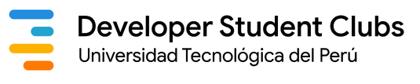
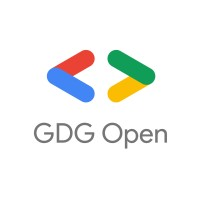

SKILLBOT CAMP
Cloud Digital Leader
Bootcamp gratuito, abierto al público general, para acompañarte mientras completas el Learning Path de Cloud Digital Leader en Google Skills
LA INFOSESSION COMIENZA EN · hora Perú (UTC-5)
{{ countdown.days }}
DÍAS
{{ countdown.hours }}
HORAS
{{ countdown.minutes }}
MIN
{{ countdown.seconds }}
SEG
¡El evento ha comenzado!
ORGANIZADO POR


¿SKILLBOT CAMP ES PARA TI?
SkillBot Camp está pensado para estudiantes y personas interesadas en tecnología que quieren entender Cloud desde sus fundamentos. No necesitas experiencia previa en Google Cloud ni saber programar.
- {{ req }}
Tu ruta, paso a paso
6 cursos. 6 insignias. 1 insignia del recorrido completo.
{{ step.label }}
{{ step.desc }}
{{ step.label }}
{{ step.desc }}
{{ step.label }}
{{ step.desc }}
🏆 RECORRIDO COMPLETADO
6/6 insignias
Así se ven las próximas semanas
3 semanas, 6 sesiones con Katherine Chauca, por Microsoft Teams.
🗓️
6 sesiones
🔁
2 por semana
💻
Microsoft Teams
🌐
100% virtual
🎟️
Aforo ilimitado
PRÓXIMA FECHA CONFIRMADA
26 DE SEPTIEMBRE
11:00 a. m. (hora Perú) · Taller informático
RITMO DEL PROGRAMA
2 veces por semana
6:30 – 8:00 p. m.
Cronograma de sesiones
Todas las fechas confirmadas · hora de Perú (UTC-5)
INFO SESSION · EMPIEZA AQUÍ
26 DE SEPTIEMBRE
Taller informático · abierto a todos
SÁBADO11:00 a. m.
29SEP
01OCT
06OCT
08OCT
14OCT
16OCT
Quiénes te acompañan
Conoce a quienes te acompañarán durante tu recorrido.
Lo que te llevas si vas a fondo
{{ premio.icon }}
{{ premio.title }}
{{ premio.desc }}
Antes de que preguntes

Crea tu Credencial Virtual
Ya conoces SkillBot Camp. Personaliza tu credencial con tu nombre y fotografía, descárgala y comparte que serás parte.
Crear mi credencial